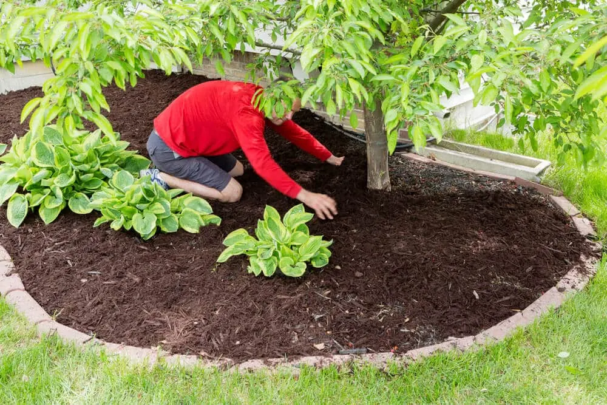
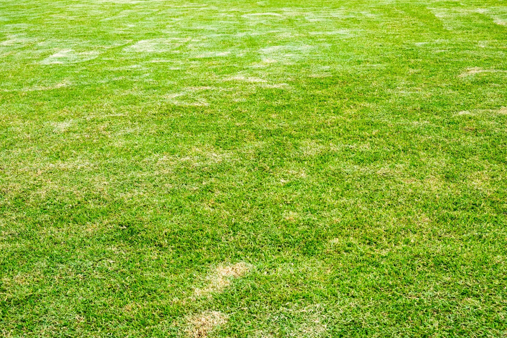

Planned Around Your Beds
We look at each bed first, so the mulch matches the area and depth.
At Big Easy Lawn Care, we provide professional lawn mulching and mulch installation for homes and businesses across the greater New Orleans area. We plan each job around your beds, clear rooted weeds, and spread mulch at the depth your plants need, kept clear of trunks and stems.
We plan each mulch installation job in New Orleans around your beds and the local climate and soil. Our approach is to clear weeds that are already rooted, spread mulch at a depth matched to what is planted, and leave a clear gap around every trunk and stem. A fully insured lawn professional does the work.
We look at each bed first, so the mulch matches the area and depth.
Mulch stops new weed seed but not rooted weeds, so those come out first.
Bedding plants, shrubs, and trees each get their own depth, since shallow roots smother easily.
We pull mulch back from trunks and stems instead of piling it up, so bark stays dry in our humidity.
Every job goes to a fully insured lawn professional who sees it through to the finish.
Manage visits from your phone or browser, pay online, and reserve a spring or fall refresh anytime.
We offer mulch installation in New Orleans four ways: garden bed mulching for flowers and shrubs, tree ring mulching under shade and ornamental trees, a seasonal refresh for beds where the old layer has thinned, and commercial mulching for businesses and managed properties. Each one starts with a free, no-obligation estimate.

Flower beds, foundation plantings, and shrub borders get a fresh, even layer.

A wide, level ring under the canopy, held back from the trunk, never piled into a volcano.

A spring or fall top-up for beds where the old layer has broken down to a couple of inches or less.
Beds and tree rings at businesses and managed properties, kept neat all season.
Mulching works differently in New Orleans because heavy rain can wash a loose layer out of a bed, long summer heat dries bare soil fast, and steady humidity turns mulch piled against a trunk into a source of disease. The material, the depth, and the gap at every trunk all have to suit that climate.

For most New Orleans beds, an organic mulch such as pine straw or pine bark at 2 to 4 inches works best, according to LSU AgCenter. Use about 1 inch over bedding plants, about 2 inches around shrubs, and 3 to 4 inches under trees, and keep every layer clear of trunks.
Organic
Light and airy, it knits together on slopes and resists washing out in heavy rain.
Organic
Settles more slowly than most organic mulches and adds organic matter as it breaks down.
Organic
Covers well and feeds the soil, then needs topping up as it decays.
Inorganic
These suppress weeds and do not need reapplying, but add nothing to the soil.
Types and the 2 to 4 inch range follow LSU AgCenter guidance. Whatever the material, we keep it 2 to 3 inches from trunks and stems.
Our New Orleans mulch installation service works in three steps. We look at the beds and give you a free, no-obligation quote; a fully insured lawn professional clears weeds and spreads mulch at the right depth; and you manage visits and payments from your phone or web browser when a refresh is due.
We look at the beds and tree rings, note the plantings and weeds, then give you a clear quote.
Your lawn professional clears rooted weeds, spreads mulch evenly, and pulls it back from trunks.
Manage visits and pay online, and reserve a refresh in spring or fall when the layer thins.

The best times to mulch beds in New Orleans are spring and fall. A spring layer goes down before summer heat and helps beds hold moisture, while a fall refresh covers the soil through winter rain. LSU AgCenter suggests checking mulched areas each spring and fall and topping up any thin spots.
A fresh layer before the heat helps beds hold moisture.
Mulch buffers soil through the heat, so watch for thin spots.
Top up where the layer has broken down over the summer.
The layer covers soil through winter rain and insulates roots.

Cost depends on bed area, depth, material, and weed clearing. We quote after a free, no-obligation look at the property.
Get Free EstimatesBefore booking mulching in New Orleans, settle three things: which beds and tree rings you want covered, which material suits each spot, and whether old mulch, leaves, or overgrowth needs clearing first. Sorting those out ahead of time makes the quote accurate and lets the work get done in as few visits as possible.
List the beds and tree rings to cover, and flag any left for a season or two so we can plan weed cutting first.
Pine straw suits slopes and pine bark settles slowly, or tell us what is already down so the new layer matches.
If old mulch, leaves, or debris need removing, add clean up and hauling to the same visit.
Our customers mention the same things again and again: prompt, courteous crews, detailed cuts with a thorough cleanup afterward, fair pricing, and fast replies, including a callback within 24 hours on an overgrown lawn. Here is what a few of them shared with us.
The lawn care service I received from start to finish was great. The staff are always prompt and courteous, the prices can't be beat and my yard looks amazing, all thanks to Big Easy Lawn Care!
Big Easy Lawn Care is great! I called them up to take care of an overgrown lawn, and they were able to get back with me within 24 hours. Their pricing was very reasonable as well. We'll be using this company from now on for our lawn care needs.
The guys at Big Easy Lawn Care did an excellent job. They did a very detailed cut and cleaned up thoroughly after. I am so happy with the results! My lawn looks better than ever before, thanks to them!
Mulching in New Orleans pairs naturally with the rest of our lawn and yard maintenance: grass cutting to keep the lawn as neat as the beds, trimming for edges a mower cannot reach, weed cutting before a bed is mulched, pressure washing, and clean up and hauling for old mulch and debris.
LSU AgCenter recommends a mulch layer 2 to 4 inches deep. Use about 1 inch over bedding plants with shallow roots, about 2 inches around shrubs, and 3 to 4 inches under trees. Too thick a layer cuts off oxygen to the roots, while too thin a layer lets weeds through.
To find how much mulch you need, multiply the bed area by the depth you want. A standard 2 cubic foot bag covers about 8 square feet at 3 inches deep, so 25 bags cover roughly 200 square feet. Add about 10 percent for settling, and measure each bed separately because depth should change with the planting.
A cubic yard of mulch holds 27 cubic feet, so it takes roughly 13 or 14 standard 2 cubic foot bags to equal one yard. A single yard covers about 100 square feet at 3 inches deep, or about 150 square feet at 2 inches, which is enough for most small and medium beds.
Spring and fall are the two practical windows in New Orleans. A spring layer goes down before summer heat and helps beds hold moisture, while a fall refresh covers the soil through winter rain. LSU AgCenter suggests checking mulched areas each spring and fall and topping up wherever the layer has thinned.
Spread a wide, level ring 3 to 4 inches deep under the canopy, and keep the mulch 2 to 3 inches away from the trunk. Never pile it against the bark in a volcano shape, because LSU AgCenter warns that mulch against the trunk keeps it wet and raises the risk of disease and other pest problems.
Mulch suppresses weeds by stopping new weed seed from sprouting, but it will not kill weeds that are already rooted in the bed. Pull or cut existing weeds before mulching, then keep the layer at 2 to 4 inches, since a thin layer gives weeds a chance to push through it.
Mulch protects the soil in a planting bed. LSU AgCenter notes that it reduces evaporation and holds moisture, suppresses weeds, reduces erosion, insulates roots from cold, and buffers plants from mowers. Organic mulches such as pine straw and pine bark also add organic matter to the soil as they break down.
How long mulch lasts depends on the material. Organic mulches such as pine straw, pine bark, and shredded wood break down over time, while rock and rubber do not. LSU AgCenter advises reapplying once a layer breaks down to only a couple of inches, which is why many beds get a refresh each spring and fall.
Join our satisfied and happy customers. Get your free lawn care assessment today.